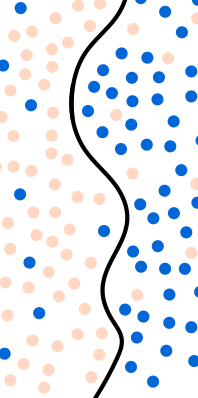
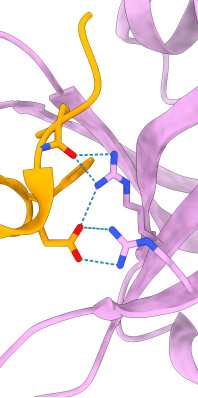

🚧 As I continue learning and refining my skills, this repository is a work in progress, so I am constantly adding updates and new projects! 🚀

In this project, I explore the use of Supervised Classification Machine Learning Algorithms (Naive Bayes, Support Vector Machine and K-Nearest Neighbors) to predict the Fetal Health State during childbirth.
| Completion Date |
ML Algorithms |
Key Steps |
| Feb, 2025 |
- Naive Bayes
- Support Vector Machine (SVM)
- K-Nearest Neighbors (KNN) |
1. Exploratory Data Analysis (EDA): univariate and multivariate.
2. Outliers detection (IQR, Z-score) & Treatment.
3. Splitting the Dataset.
4. Feature scaling.
5. Coarse-to-Fine Hyperparameter Tuning Search.
6. Models Training.
7. Validation Report: ROC-AUC, Accuracy, F1-score, PR-AUC, etc. |

In this project, I have designed a protein binder using Deep Learning Diffusion Methods
| Completion Date |
Software |
Key Steps |
| Mar, 2025 |
- RosettaFold Diffusion
- ProteinMPNN
- AlphaFold 3
- Linux/Bash
- Python
- USCF Chimera X |
1. Backbone generation.
2. Sequence optimization.
3. Structure generation.
4. Second Round and Final Thoughts. |

3. 🌲💉 Diabetes prediction using Ensemble Methods
Currently I am working on a project to predict Diabetes using Enseble methods as Bagging (Random Forest) and Boosting (XGBoost):
🚧🚧🚧 I expect to have the project ready by 📌 April 21ST, 2025. 🚧🚧🚧
| Completion Date |
ML algorithms |
Key Steps |
| Apr, 2025 |
- Isolation Forest
- PCA
- K-means clustering
- Random Forest
- XGBoost |
1. Data Pre-processing
2. Multivariate outliers detection (Isolation Forest).
3. Classificator I: Random Forest.
4. Classificator II: XGBoost
5. Metrics and Validation Report. |
> Similar approach: Zhu, C., Idemudia, C. U., & Feng, W. (2019). Improved logistic regression model for diabetes prediction by integrating PCA and K-means techniques. Informatics in Medicine Unlocked , 17, 100179.
Future Projects
📌 Apr-May 2025: Design and implementation of infrastructure automation on AWS.
📌 May 2025: Development of a data ingestion and analysis application using Hadoop and Spark.